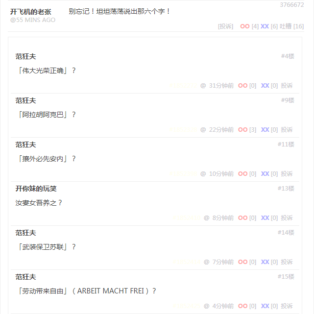
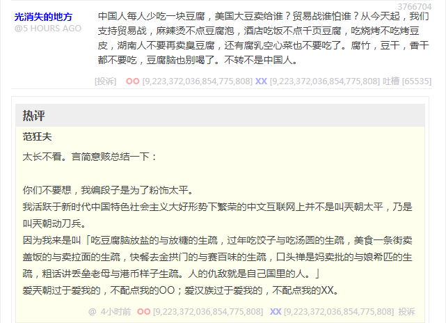

回复
谢邀。
长话短说总而言之，煎蛋是个优秀的素材来源，推特微博之上浩如烟海的信息流量，经由煎蛋活跃账号整理归纳之后，精华多了吖。
最新在煎蛋与九省通衢的活跃色目网友谈笑风生的内容转贴如下：

「那六个字」
别忘记！坦坦荡荡说出那六个字！
「伟大光荣正确」？
「阿拉胡阿克巴」？
「攘外必先安内」？
「武装保卫苏联」？
「劳动带来自由」（ARBEIT MACHT FREI）？
汝妻女吾养之？

「言简意赅」
中国人每人少吃一块豆腐，美国大豆卖给谁？贸易战谁怕谁？从今天起，我们支持贸易战，麻辣烫不点豆腐泡，酒店吃饭不点千页豆腐，吃烧烤不吃烤豆皮，湖南人不要再卖臭豆腐，还有腐乳空心菜也不要吃了。腐竹，豆干，香干都不要吃，豆腐脑也别喝了。不转不是中国人。
太长不看。言简意赅总结一下：
你们不要想，我编段子是为了粉饰太平。我活跃于新时代中国特色社会主义大好形势下繁荣的中文互联网上并不是叫兲朝太平，乃是叫兲朝动刀兵。
因为我来是叫「吃豆腐脑放盐的与放糖的生疏，过年吃饺子与吃汤圆的生疏，美食一条街卖盖饭的与卖拉面的生疏，快餐去金拱门的与去赛百味的生疏，口头禅是妈卖批的与娘希匹的生疏，粗话讲丢垒老母的与讲港币样子的生疏」。人的仇敌就是自己国里的人。
爱兲朝过于爱我的，不配点我的OO；爱汉族过于爱我的，不配点我的XX。
更多消息，请参考Markdown版备份（两会结束之后开始更新）：
谈笑风生＠九省通衢の煎蛋
更早一些的素材，可以参考知乎的这个回答当中积累的内容：
龙空的范队何许人也？
大早上起来出门「箪食瓢饮」归来，按照九省通衢の活跃色目账号替我总结的规律，吃饱了撑得慌之后就该惹是生非了也。